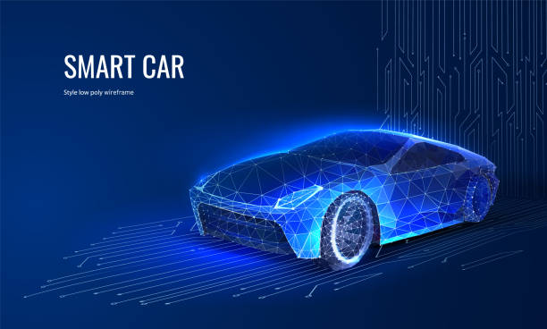

TCIT — Image Flash · Option 1 (la voiture est une image)
Charge ta voiture ci-dessous, puis règle taille / position / fusion jusqu'à ce que ce soit parfait.
Version 3.0.20.0

0x4A · TG-WZ · SCAN OK · VIN ✓ · IMMAT ✓ · TRANSIT ✓ · 00 D4 FF
TCIT
Togolaise de Contrôle et d'Immatriculation Transit
Réglages de la voiture
Glisse-dépose
ton image directement sur la bannière ci-dessus, ou choisis un fichier :
Mode de fusion
Écran — retire un fond sombre ⭐
Normal — pour PNG transparent
Éclaircir
Luminosité
Si ton image a un fond bleu/noir, garde « Écran ».
Largeur
380px
Position verticale
60px
Décalage horizontal
0px
Fondu des bords ⭐
72
Éclat (halo bleu)
16
Opacité
100%
Contraste
115%
Recadrage dans l'image source (612 × 368)
Départ X
175
Départ Y
100
Largeur zone
430
Hauteur zone
255
↺ Revenir aux valeurs par défaut
✅ Tes réglages sont
mémorisés automatiquement
— ils survivent aux rechargements.
Réglages actuels
(je les reprendrai tels quels dans l'app) :
—
⚠️ Pense à vérifier que tu as le
droit d'utiliser
l'image choisie (beaucoup de visuels low-poly sont sous licence).